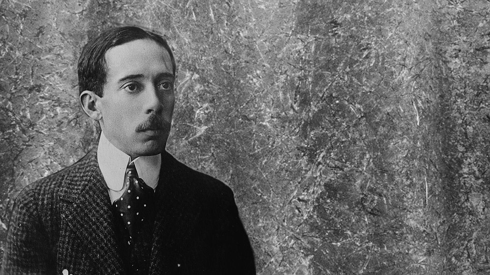

Santos Dumont, Aeronauta - inventor | 20 de julho de 1873 - 23 de
julho de 1932 (59 anos)
História
Principais Feitos
4 de julho de 1898 - Brésil (balão) — Envelope
de seda japonesa e 113 m3 de capacidade.
12 jun. 1899 — L'Amérique (balão); 500m³ de
hidrogênio e 10 metros de diâmetro, sendo capaz de carregar alguns
passageiros, mas sem controle, com o qual enfrentou tempestades e
acidentes.
18 de setembro de 1898 Nº 1 (dirigível) — Tinha
um envelope cilíndrico com extremidades cônicas contendo um
balonete ligado a uma bomba de ar: 25 m de comprimento, 3,5 m de
diâmetro e 180 m3 de capacidade. Uma cesta quadrada foi suspensa a
partir de ripas de madeira contidas em bolsos no envelope e um
leme coberto de seda equipado atrás e acima da cesta.
11 de maio de 1899 — Nº 2 (dirigível) — Uma
ampliação do Nº 1, com uma capacidade de 200 m3.
Nº 12 (helicóptero) — Dois rotores de 6 m de
diâmetro feitos de seda envernizadas esticada sobre um quadro de
bambu. Alimentado por um motor Antoinette de 25 hp.
Nº 14-a (dirigível) — Um dirigível com 41 metros
de comprimento, 3,4 de diâmetro, 186 de cubagem e um motor de 14
CV. Realizou um curto voo em 12 de junho de 1905.
29 de julho de 1906 Oiseau de Proie I (avião) —
Aeronave com 4m de altura, 10 de comprimento, 12 de envergadura,
trem de pouso com duas rodas e um motor Levavasseur de 24 CV.
Testado num cabo de aço e puxado por um asno em 29 de julho de
1906 para testar os comandos da aeronave. Em agosto de 1906 foi
adicionado uma pequena roda traseira. Testado no dia 21 de agosto
de 1906, o eixo do motor se quebrou. No dia 22 as hélices
alcançaram 1,400 rotações por minuto. No dia 23, alcançou 25 km/h
no gramado. Em 3 de setembro de 1906, colocou um motor de 50 CV e
nos dias 4 e 7 de setembro de 1906 atingiu 35 km/h no gramado e
saltou 7 metros.
1908 Nº 20 Demoiselle — Uma modificação do Nº 19,
considerada a primeira aeronave ultraleve prática.
Lutei, a princípio, com as maiores dificuldades para conseguir a
completa obediência do aeroplano. Era o mesmo que arremessar uma
flecha com a cauda para a frente. Em meu primeiro vôo, após
sessenta metros, perdi a direção e caí... Não mantive mais tempo
no ar, não por culpa da máquina, mas exclusivamente minha.
-- Alberto Santos Dumont